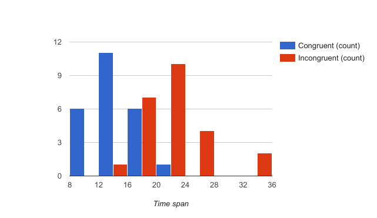

Q1:What is our independent variable? What is our dependent variable?
The independent variable is whether the color and word are congruent: “a congruent words condition, and an incongruent words condition”.
The dependent variable is the time span (response time in seconds).
Q2. What is an appropriate set of hypotheses for this task? What kind of statistical test do you expect to perform? Justify your choices.
Null Hypothesis: There is no difference between congruent condition means and incongruent condition means().
Alternative Hypothesis: The mean of congruent condition’s time span won’t equal to the mean of incongruent condition’s time span ().
I would like to perform a non-directional paired t-test.
I choose t-test because we cannot obtain the population mean μ; and the sample size is less than 30, which would make an obvious bias when using sample SD s to infer population SD σ.
The test should be non-directional since: before getting the experiment data we couldn’t expect the response time MUST be longer when the color and word are incongruent, there might be some special situation that participants response faster while disturbing factors appear.
And in this experiment there were 2 conditions on the same subject, hence paired t-test is chosen.
Q3.Report some descriptive statistics regarding this dataset. Include at least one measure of central tendency and at least one measure of variability.
The mean of congruent condition is 14.05s, and the mean of incongruent condition is 22.02s, the participants read correctly faster while the color and the word are congruent.
The sample SD of congruent condition is 3.56s, and the sample SD of incongruent condition is 4.80s.
Q4. Provide one or two visualizations that show the distribution of the sample data. Write one or two sentences noting what you observe about the plot or plots.
The distribution of two conditions:

These two conditions have different modes and different ranges, it seems with incongruent condition, participants took more time to response.
Q5. Now, perform the statistical test and report your results. What is your confidence level and your critical statistic value? Do you reject the null hypothesis or fail to reject it? Come to a conclusion in terms of the experiment task. Did the results match up with your expectations?
I choose 95% as confidence level.
df=n-1=23, by checking the t-table, the critical statistic value is ±2.069 .
, hence s=4.86 .
Thus,
-8.02 < -2.069, so we confidently reject the null hypothesis.
Due to the result, we probably can say with congruent condition and incongruent condition, the participants’ response time do have differences. This is quite match my expectation.
Q6. Optional: What do you think is responsible for the effects observed? Can you think of an alternative or similar task that would result in a similar effect? Some research about the problem will be helpful for thinking about these two questions!
Some theories tried to explain the Stroop Effect, like Selective attention, Automaticity and etc.
The Stroop task doesn’t fit color blindness people, so we can present a list of shapes with names congruent or not.